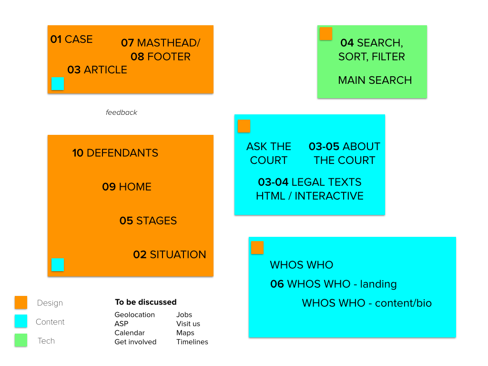

ICC Beta Welcome to the ICC Beta.  Templates 01 - Case 02 - Situation 03 - Article 04 -Search, sort and filter 05 - Stage 06 - Landing 07 - Masthead 08 - Footer 09 - Home 10 - Defendants Content Sitemap Content style guide Open content issues